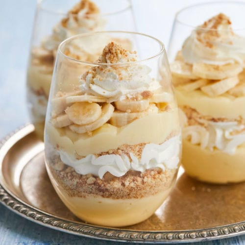

Magnolia Bakery's Banana Pudding

Description
I just really like banana pudding. It's kind of an oxymoronic dessert; somehow it's heavy yet light,
creamy yet fresh, sweet but not too sweet. It's pretty easy and cheap to make in big batches too!
Overall, a 10/10 dessert. I have personally not been to Magnolia before, but I hear their banana pudding
is one of the best around.
Ingredients
- 1 (14 oz) can sweetened condensed milk
- 1 1/2 cups ice cold water
- 1 (3.4 oz) box vanilla instant pudding mix
- 3 cups heavy cream
- 4 cups sliced barely ripe bananas (see Tips)
- 1-2 (12 oz) box Nilla Wafers
Instructions
- In a large bowl, beat together the sweetened condensed milk and water until well combined - about 1 minute.
Add the pudding mix and beat well - about 2 minutes.
Cover and refrigerate for 3-4 hours or overnight.
Note: It's very important to allow the proper amount of time for the pudding mix to set.
It will be watery if you don't let it set up long enough.
- In a large bowl, whip the heavy cream until stiff peaks form.
Gently fold the whipped cream into the pudding mixture until no streaks of pudding remain.
- Dessert can either be made in individual portions or in a large glass bowl with 4-5 quart capacity
or a 9x13 baking dish.
- To assemble dessert, arrange 1/3 of the Nilla wafers covering the bottom, overlapping if necessary.
Next, layer 1/3 of the bananas, and 1/3 of the pudding mixture. Repeat twice more, garnishing with additional
wafers or wafer crumbs on the top layer. Cover tightly and allow to chill in the fridge for at least 4 hours -
or up to 8 hours, no longer!
Tips
- Pick bananas that are barely ripe. If they are slightly green and the stem, those are perfect.
They will not brown as fast.
- You can also brush them with some lemon juice.
- You can rinse them with club soda.
- Try to keep the finished dessert airtight.